Spool
Herramienta empresarial para explorar, visualizar y exportar archivos spool del AS/400. Sin comandos. Sin terminales. Sin complicaciones.
Cómo Abrir Spool
Spool funciona tanto como aplicación de escritorio (Portable) como en el navegador web. La interfaz y funciones son prácticamente idénticas en ambas versiones.
No requiere instalación adicional. El servidor y la aplicación van incluidos.
Disponible desde cualquier PC en la red sin instalar nada. Solo necesitas un navegador.
Inicio de Sesión
En ambas versiones verás la misma pantalla de login. Ingresa con tu usuario y contraseña del AS/400.
El mismo usuario que usas en el terminal verde. Ej: TIO21GL
Tu contraseña actual del AS/400. La sesión se cifra con AES-256 antes de enviarse.
El sistema valida tu sesión en segundos. Si las credenciales son correctas, ingresas directo al dashboard.
El servidor AS/400 al que te conectas está configurado por el administrador. No necesitas cambiar ninguna IP ni puerto.
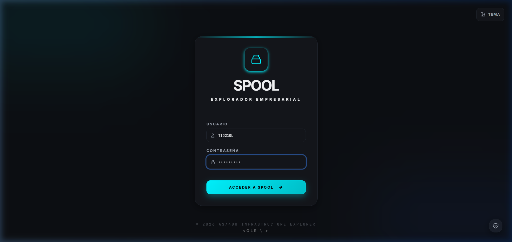
Cómo se conecta y extrae spools
Este manual explica paso a paso cómo el sistema se conecta al mainframe AS/400, verifica las credenciales, obtiene la cola de spool y descarga el contenido de un reporte, sin usar terminales ni escribir comandos CL.
- Al enviar el formulario de login, el servidor guarda en
$_SESSION['as400_session']el usuario, contraseña e IP del mainframe que escribiste. - En esta fase no se conecta aún al AS/400: la sesión queda abierta localmente.
- La verificación real ocurre al pedir la cola: se envía la acción
verify_loginaprocess.php.
process.phpejecutasrc/spool_explorer.pypasándole la IP, usuario y contraseña (conlist_remote).- El script abre una conexión FTP (protocolo nativo de OS/400, compatible con V5R3) usando codificación
latin-1. - Ejecuta el comando remoto
RCMD QSH CMD('system WRKSPLF ... > archivo_tmp')para volcar la lista de spool a un archivo en el IFS. - Descarga ese archivo con
RETR, lo decodifica y lo devuelve a la aplicación como JSON. - Con esto queda validado el par usuario/contraseña: si el login falla, aquí se muestra el error de autenticación.
filter_user) y de nombre (filter_name), más paginación
(limit/offset) para colas muy grandes.
- Al abrir un spool, se envía
fetch_remotecon elfile_name(y opcionalmente el número de trabajojobySPLNBR). - El puente ejecuta
CPYSPLF FILE(...) TOFILE(QTEMP/...) JOB(...) SPLNBR(...) CTLCHAR(*FCFC): copia el spool a un archivo físico temporal en QTEMP. - Ese archivo físico se recupera por FTP con
RETR QTEMP/...y el contenido crudo se devuelve a PHP. - PHP limpia las marcas de control de carro de impresora (FCFC) para obtener texto limpio y lo convierte a UTF-8 (CP850 → UTF-8).
- El texto plano se envía a
process.php(acciónparse) donde el Parser separa cada línea y sus campos. - En el Editor de Layouts defines cortes de filas y columnas para transformar el texto en una cuadrícula.
- Desde la barra de exportación puedes generar Excel (.xlsx/.csv) y PDF; la exportación es sanitizada para evitar inyección de fórmulas.
- Usuario Puente (Proxy): si está configurado en
config/proxy.dat(cifrado,USE_PROXYactivo), el sistema conecta con ese usuario técnico y usa el usuario de la sesión como destino de listado (list_remote). Así no necesitas exponer credenciales reales. - Gatekeeper: el PIN maestro se almacena como hash en
config/gatekeeper.jsony protege la configuración del puente y la personalización de temas. - Sin bases de datos externas: toda la configuración vive en archivos JSON locales del servidor.
| Etapa | Quién lo hace | Qué comando/acción usa |
|---|---|---|
| Login | index.php | action=login → sesión local |
| Verificación | spool_explorer.py | verify_login · FTP |
| Cola de spools | spool_explorer.py | WRKSPLF → RETR |
| Contenido | spool_explorer.py | CPYSPLF → QTEMP → RETR |
| Limpieza FCFC | process.php / Parser | decode CP850 → UTF-8 |
| Exportación | Editor de Estructura | Excel sanitizado / PDF |
Dashboard Principal
Al ingresar verás el panel principal dividido en dos zonas: la Cola de Spools a la izquierda y la Visualización de Datos a la derecha.
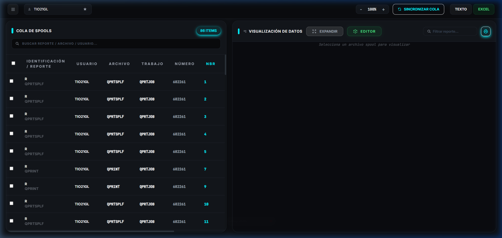
Cola de Spools
Lista de todos tus archivos spool del AS/400. Muestra usuario, archivo, trabajo y número. El contador en verde indica cuántos hay en total.
Buscador Interno
Filtra la lista en tiempo real escribiendo en la barra "BUSCAR REPORTE / ARCHIVO / USUARIO...". Acepta cualquier campo de la tabla.
Sincronización
El botón Sincronizar refresca la lista desde el AS/400 al instante.
Columnas de la Cola de Spools
| Columna | Descripción | Ejemplo |
|---|---|---|
| Identificación / Reporte | Estado del spool (R=Ready) y nombre del archivo | R · QPRTSPLF |
| Usuario | Usuario AS/400 que generó el spool | TIO21GL |
| Archivo | Nombre del archivo de cola (spool file name) | QPRTSPLF |
| Trabajo | Nombre del trabajo que generó el reporte | QPRTJOB |
| Número | Número de trabajo dentro del AS/400 | 682261 |
| NBR | Número de secuencia del spool file | 1, 2, 3... |
Ver un Reporte
Haz clic sobre cualquier fila de la cola para cargar ese spool en el panel derecho. El contenido aparece en formato monoespaciado, fiel al AS/400.
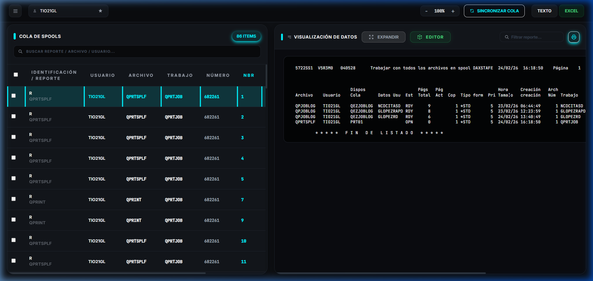
Herramientas del reporte
Atajos de teclado
| Atajo | Función |
|---|---|
| Ctrl + M | Expandir / Restaurar panel de reporte |
| ↑ / ↓ | Navegar entre filas de spools |
| Ctrl + | Zoom in (aumentar tamaño del texto) |
| Ctrl − | Zoom out |
Los controles − 100% + en la barra superior escalan toda la interfaz (sidebar + cola + visor) juntos.
Dashboard Funcional
Analiza en vivo los spools activos. Abre el Dashboard desde el botón de la barra lateral (sección Herramientas de Sistema).
Qué incluye
Total de reportes, páginas acumuladas, promedio de páginas y spool de mayor tamaño.
Gráfico de barras con los 8 usuarios que más spools tienen.
Dona con leyenda: RDY, HLD, WTR, MSG, etc.
Los 10 reportes más pesados del listado actual.
Radar con los 6 nombres de archivo más frecuentes.
Número de colas de salida y carga de red estimada (MB).
Tip: El dashboard se actualiza con cada refresco de la cola (incluido el monitor automático de 10s). Los gráficos usan la paleta de colores del tema activo.
Necesita datos de spools cargados en la cola. Si aún no has consultado, presiona primero el botón de refrescar la lista.
Perfiles de Conexión
Guarda combinaciones de IP + usuario + clave para entrar más rápido sin teclear cada vez. Se almacenan localmente en tu navegador.
Cómo usarlo
En la pantalla de login escribe IP, usuario y clave.
El botón junto al selector de perfil abre el diálogo para nombrar el perfil (ej. "Producción").
Al elegirlo en el desplegable se autocompletan IP, usuario y clave. Solo falta pulsar Entrar. El botón [−] elimina el perfil seleccionado (con confirmación).
Las credenciales quedan guardadas solo en el localStorage de este navegador. No se transmiten ni almacenan en el servidor.
Editor de Layouts
El Mapeador de Layout te permite definir con precisión milimétrica cómo se separan las columnas del reporte para una exportación Excel perfecta. Imprescindible para reportes de columnas fijas.
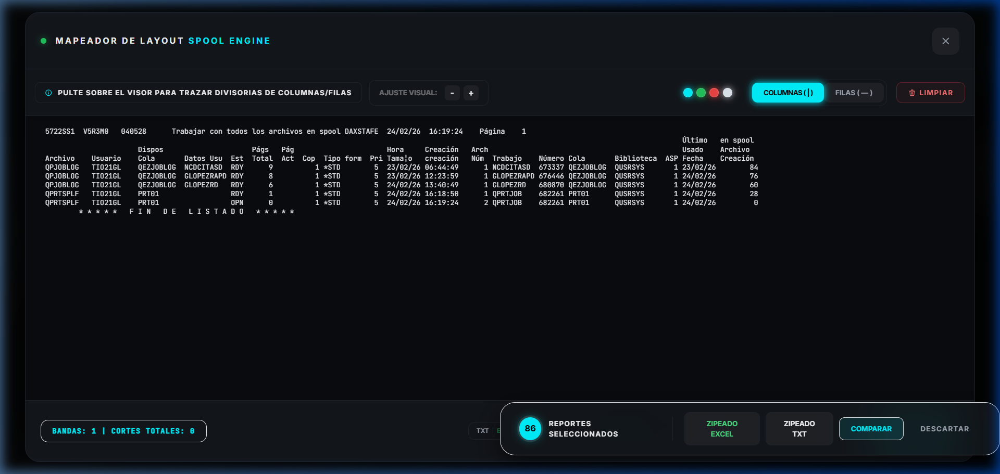
Cómo usar el editor
Haz clic sobre cualquier fila del spool para cargarlo en el panel de visualización.
Ubicado en la barra superior del panel derecho, abre el Mapeador de Layout en pantalla completa.
Haz clic en el visor del reporte para colocar líneas de corte verticales (COLUMNAS) u horizontales (FILAS). Cada línea define el límite de una columna en Excel.
Con las divisorias definidas, presiona TXT o EXCEL en la barra inferior. El sistema divide el spool según tu mapa.
Controles del editor
Modo para trazar cortes verticales. Separa el reporte en columnas de izquierda a derecha.
Modo para trazar cortes horizontales. Útil para omitir encabezados o pie de página.
Elimina todas las divisorias trazadas para empezar de nuevo.
Cambia el tamaño de fuente del visor del editor para ver mejor los datos sin afectar el corte.
El indicador BANDAS: X | CORTES TOTALES: Y en la esquina inferior izquierda te muestra cuántas divisorias has definido en tiempo real.
Exportar y Guardar PDF
Exporta cualquier reporte a Excel, TXT o PDF. Puedes hacerlo de forma individual o en masa con múltiples spools seleccionados.
Exportación Individual
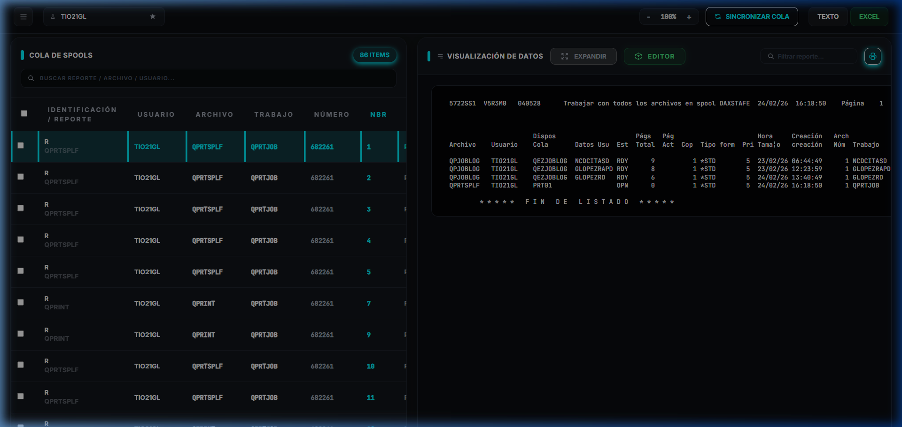
Botón EXCEL en la barra superior derecha. Exporta el spool activo a un archivo .xlsx con columnas inteligentes.
Botón TEXTO en la barra superior. Descarga el spool como archivo .txt en formato RAW exacto del AS/400.
Ícono de impresora (cian, esquina superior derecha del panel). Abre el diálogo nativo del navegador para imprimir o guardar como PDF.
Exportación Masiva (Bulk)
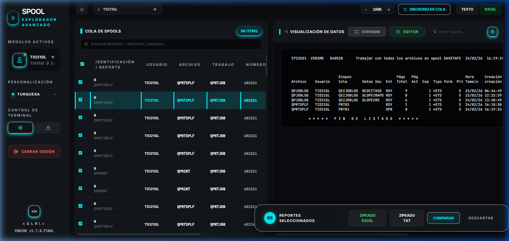
Seleccionar spools
Acciones de la barra inferior
Sidebar y Centro de Control
El sidebar se expande haciendo clic en el ícono de menú (≡) en la esquina superior izquierda. Contiene tu perfil, personalización y acceso al Centro de Control.
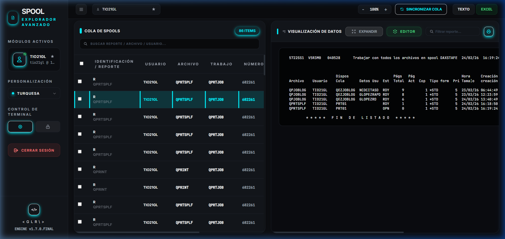
Secciones del Sidebar
Muestra tu usuario de AS/400 activo con estrella de favorito. El punto verde indica sesión en línea.
Selector de tema de color. Cambia entre modos como Turquesa, Rojo, Naranja, etc. El cambio es inmediato y se guarda en el navegador.
Dos botones: ⚙ abre el Centro de Control. 🔒 accede a la configuración de seguridad del servidor puente.
Cierra tu sesión del AS/400 y regresa a la pantalla de login. La sesión expira automáticamente por inactividad.
Centro de Control
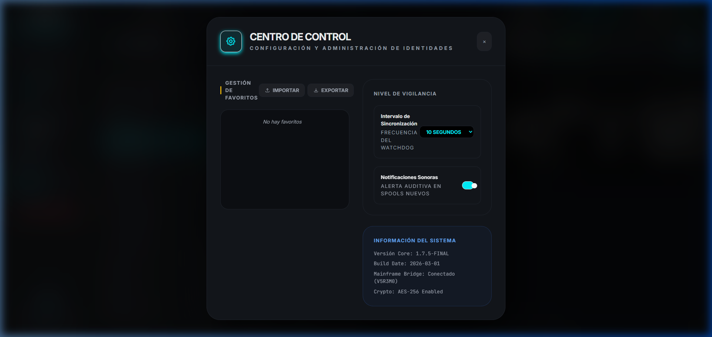
Guarda usuarios de AS/400 como favoritos para filtrar sus spools con un clic. Puedes exportar e importar la lista de favoritos.
Define con qué frecuencia el sistema verifica spools nuevos automáticamente. Opciones: 10 seg, 30 seg, 1 min, 5 min.
Activa o desactiva la alerta auditiva cuando llegan nuevos spools al sistema. El toggle cian/gris controla este comportamiento.
Actualizaciones
La aplicación se actualiza a nuevas versiones directamente desde el panel. El botón Actualizar de la barra lateral abre el centro de actualizaciones para buscar, instalar o revertir versiones.
Cómo funciona
Consulta el repositorio y muestra la versión remota, la fecha de la última comprobación y el changelog de la nueva versión.
Descarga el paquete oficial, verifica su firma SHA-256,
comprueba que el código no tenga errores de sintaxis y aplica los cambios creando un
respaldo automático en la carpeta backups/. Tus
datos de usuario (configuración, proxy, uploads y exportaciones) se conservan.
Restaura la versión anterior desde el último respaldo de actualización si algo no funciona como esperabas.
Las acciones de instalar, revertir y guardar configuración requieren la contraseña de administrador (Gatekeeper) si está activada.
Favoritos y Filtrado Rápido
Guarda usuarios de AS/400 como Favoritos para filtrar sus reportes con un solo clic desde el buscador. Ideal cuando hay múltiples usuarios en el sistema y necesitas ver solo los de tu área.
Cómo agregar un usuario a Favoritos
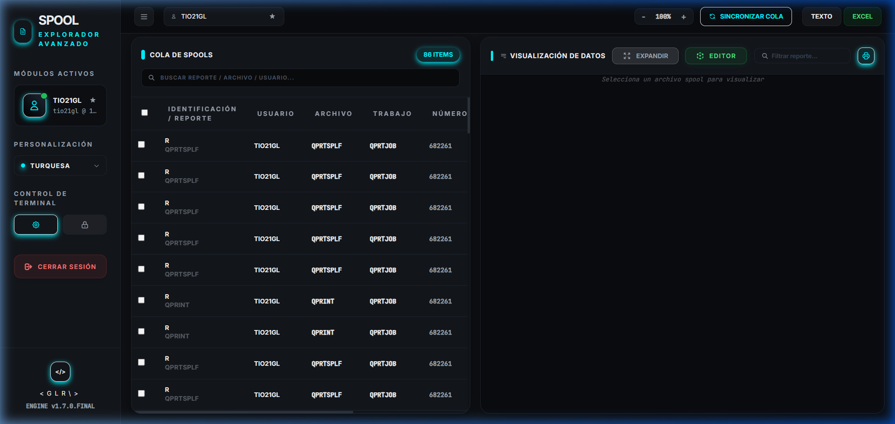
En la barra de pestañas (parte superior), cada usuario activo tiene una estrella ★ a la derecha de su nombre. También aparece en el sidebar junto a su perfil.
Un clic en la ★ agrega el usuario a tu lista de favoritos. La estrella cambia de color para confirmar. El usuario queda guardado en el navegador.
Haz clic derecho sobre cualquier fila del spool → el menú contextual puede incluir la opción de agregar el usuario de esa fila a favoritos directamente.
Los favoritos se guardan en el localStorage del navegador y en el Centro de Control. Son persistentes entre sesiones mientras uses el mismo navegador y máquina.
Filtrado Rápido desde el Dropdown
Al hacer clic en el tab de usuario (la pestaña que muestra el nombre en la barra superior), se despliega un menú con todos tus usuarios favoritos para acceso instantáneo.
Clic en el tab → Clic en el usuario favorito → La cola se filtra instantáneamente mostrando solo los spools de ese usuario. Sin necesidad de escribir nada.
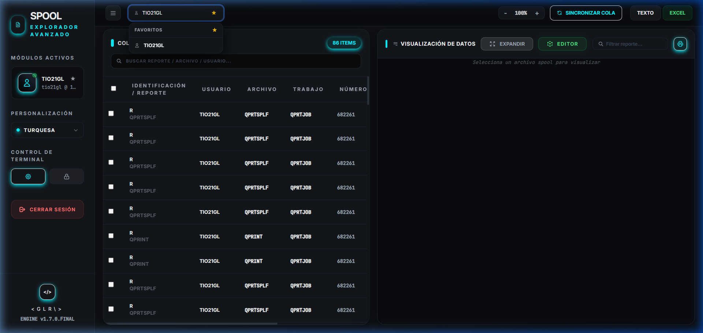
Gestión de Favoritos — Importar y Exportar
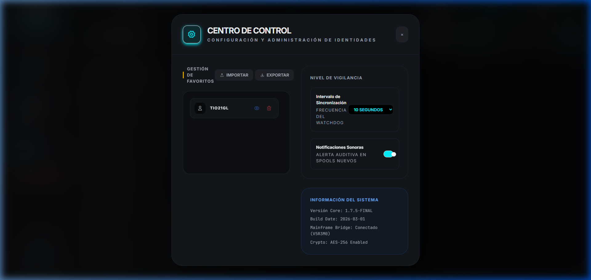
Desde el Centro de Control (ícono ⚙ en el sidebar) puedes administrar tu lista completa de favoritos.
El ícono de ojo junto a cada usuario favorito filtra la cola de spools directamente sin cerrar el modal.
El ícono de papelera junto a cada usuario lo elimina de la lista de favoritos permanentemente.
Carga una lista de favoritos desde un archivo JSON exportado previamente. Útil para compartir la misma configuración entre máquinas o usuarios del equipo.
Descarga tu lista de favoritos como archivo JSON. Guárdalo para hacer un respaldo o para importarlo en otra PC con la misma versión de SPOOL Engine.
favoritos.jsonReferencia Rápida
Todo lo que necesitas saber en un vistazo
| Clic izquierdo en fila | Ver reporte en panel derecho |
| Clic derecho en fila | Menú contextual de acciones |
| Clic en checkbox | Seleccionar para exportación masiva |
| Clic en encabezado columna | Ordenar por esa columna (asc/desc) |
| Clic en NBR | Ordena por número de spool |
| Excel (.xlsx) | Columnas detectadas + formatos numéricos limpios |
| TXT (.txt) | Texto plano RAW, idéntico al AS/400 |
| PDF (navegador) | Alta fidelidad, monoespaciado, sin estilos dark |
| ZIP Excel | Múltiples spools → Excel por cada uno, comprimidos |
| ZIP TXT | Múltiples spools → TXT por cada uno, comprimidos |